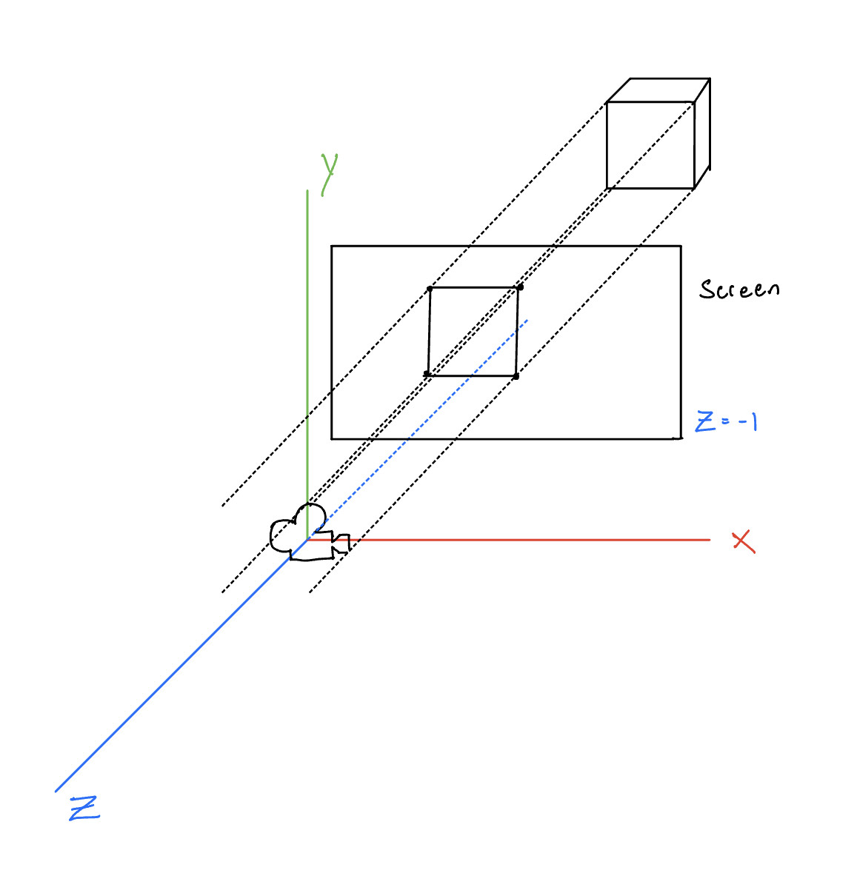
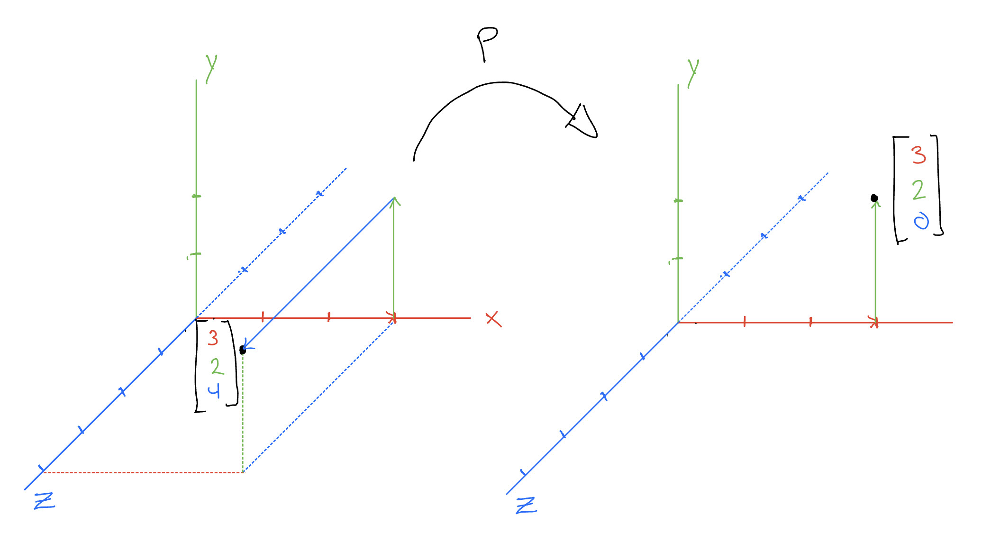
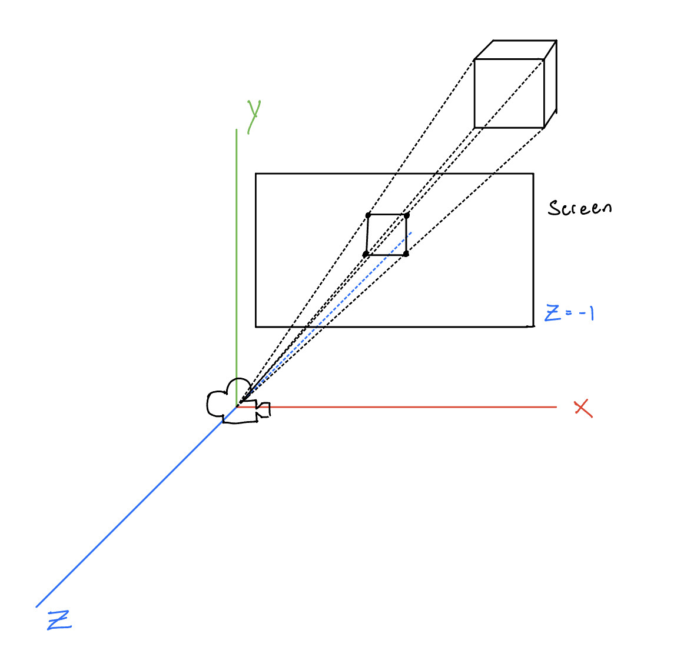
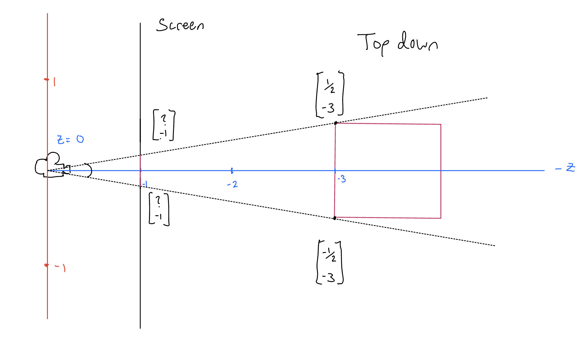
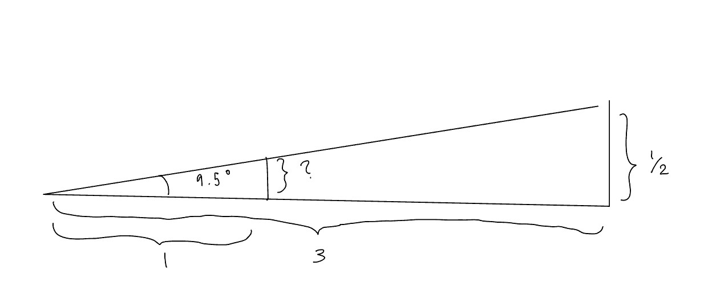
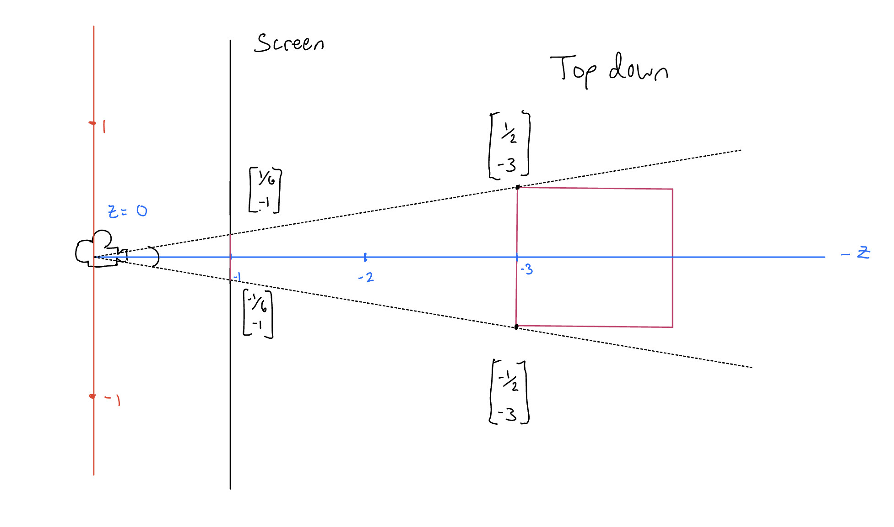

Home
Hello!
Welcome to our tutorial for 2D and 3D transformations and projection :)
On this page, we'll walk through how to encode translation into matrices of other linear transformations, such as rotation, reflection, scaling, and shear transforms. To do so we will explore homogeneous coordinates and then move on to talk about perspective projection matrix, which is another key concept in computer vision besides the translation matrix!
Why's Translation Special?
By now we have learned how to represent linear maps—or transforms—with mathematical objects called matrices. Matrices are useful in computer vision because they are composable: we can multiply together the matrices of any number of linear maps to form one matrix representing all transforms in succession. This reduces bookkeeping and computational cost.
Let's review examples of 2D transforms.
Rotation rotates a point around a fixed point or axis. Reflection flips a point across a line or a plane. Scaling multiplies the one or more coordinates of a point by a certain factor. Shearing shifts a point along a given axis while keeping other dimensions of the point's coordinates fixed.
Their corresponding matrices are shown below.
Here we see rotation, reflection, scaling, and shear transforms, each of which is represented by a \(2\) by \(2\) matrix.
These transforms are linear because they satisfy two properties: additivity and homogeneity.
We compose the rotation, reflection, scaling, and shearing into one final matrix: the affine matrix, or \(A\). This allows us to use just one matrix for all transformations. Scroll horizontally along the matrix equation to see the resulting affine matrix.
Why do we call this an affine matrix? That's because affine transformation is basically just a combination of reflection, rotation, scaling, and shear transformations. It also preserves points and straight lines, which is exactly what's happening here.
Notice what's missing from this list of common transformations of 2D geometry: translation. Translation moves a point around in space. We can use it to describe any displacement of an object in a scene. For example, translating ball rolling on the floor, an egg falling from a skyscraper, a car driving down the road, etc. Let's derive a function that will do this for us.
First think about what a translation of \(2\) units to the left and \(3\) units up does to a vector \((1,2)\) in \( \mathbb{R}^2 \). It results in a vector \((1 - 2, 2 + 3)\) or \((-1, 5)\). If we generalize this function for any vector \((x, y)\) and any translation right by \(a\) and up by \(b\), then we define $$ T(x, y) = (x + a, y + b) $$ or in a more vector friendly notation, $$ T( \begin{bmatrix} x\\ y \end{bmatrix}) = \begin{bmatrix} x\\ y \end{bmatrix} + \begin{bmatrix} a\\ b \end{bmatrix} $$ Where \(a\) and \(b\) are stored in a vector called the translation vector.
The trouble is that this function is not linear. Why might this be? We can verify that it fails homogeneity:
Scaling the translation function \(T\) by some number \(\lambda\) and applying it to a vector is not equal to the translation function applied to the same vector scaled by \(\lambda\). $$ \lambda T( \begin{bmatrix} x\\ y \end{bmatrix}) = \lambda \begin{bmatrix} x + a\\ y + b \end{bmatrix} \neq \lambda \begin{bmatrix} x\\ y \end{bmatrix} + \begin{bmatrix} a\\ b \end{bmatrix} = T(\lambda \begin{bmatrix} x\\ y \end{bmatrix}) $$ So translation can't be linear, meaning we can't express it using a 2 by 2 matrix as we did the other transformations.
In computer vision, how do we translate \(\begin{bmatrix}x\\y\end{bmatrix}\) by some vector \(\begin{bmatrix}a\\b\end{bmatrix}\)?
If we apply the affine matrix to the vector first, we have \(A( \begin{bmatrix} x\\ y \end{bmatrix})\). Then when we plug it into \(T\) we get $$ T(A(\begin{bmatrix} x\\ y \end{bmatrix})) = A (\begin{bmatrix} x\\ y \end{bmatrix}) + \begin{bmatrix} a\\ b \end{bmatrix} $$ If we do no transformations before translation, \(A\) is just the identity matrix.
$$ \begin{bmatrix} x + a\\ y + b \end{bmatrix} = \begin{bmatrix} 1 & 0\\ 0 & 1 \end{bmatrix} \begin{bmatrix} x\\ y \end{bmatrix} + \begin{bmatrix} a\\ b \end{bmatrix} $$
This works just fine, but isn't ideal. Why?
We lose the ability to compose every transformation we want into one matrix. Under this model, we always have to keep track of displacement from the origin in a seperate vector that we add to the end of the linear transformation established by \(A\). Or, even worse, if we want to translate after rotating but before shearing, we'd have to decompose \(A\) into at least two different matrices so we can apply \(T\) in between.
In computationally intensive graphics operations, using so many matrices per vertex slows everything down. We would like to keep all transformations in one matrix— no extra additions or bookkeeping.
Encoding Translation
Extending 2D to 3D
So how can we express translation as a linear transform? If we think about our space in \(\mathbb{R}^2\) as a plane in \(\mathbb{R}^3\), and extend our 2D geometry to 3D, then we can encode a 2D translation as the shearing of the extended geometry along the \(z\) axis. What does this mean? Let's observe.
Adjust the values in the shear matrix and watch how it affects the cross section (highlighted in red) with our plane
Just like there was no translation of the y coordinate in 1D translation, there's no translation of the z coordinate in 2D translation. Keep in mind that the z coordinate is added for the purpose of homogenizing the point and of creating the 3D shear matrix.
Why does this work? If we multiply the 3D shear matrix with any vector in \(\mathbb{R}^3\), \((x, y, z)\) we get the following:
$$ \begin{bmatrix} x'\\ y'\\ z'\\ \end{bmatrix} = \begin{bmatrix} x + za\\ y + zb\\ z\\ \end{bmatrix} = \begin{bmatrix} 1 & 0 & a\\ 0 & 1 & b\\ 0 & 0 & 1\\ \end{bmatrix} \begin{bmatrix} x\\ y\\ z\\ \end{bmatrix} $$
By factoring, we see that \( \begin{bmatrix}x'\\y'\\\end{bmatrix} = \begin{bmatrix}x\\y\\\end{bmatrix} + z\begin{bmatrix}a\\b\\\end{bmatrix}\) indicating we have a translation in \(x\) and \(y\) on each plane parallel to \(z\) by a vector \(\begin{bmatrix}a\\b\\\end{bmatrix}\) proportional to \(z\). Which if we recall, is exactly the definition of a shear along the \(z\) axis. And for the plane \(z = 1\) (our chosen plane to represent all of \(\mathbb{R}^2\)), we have the following:
$$ \begin{bmatrix} x + a\\ y + b\\ 1\\ \end{bmatrix} = \begin{bmatrix} 1 & 0 & a\\ 0 & 1 & b\\ 0 & 0 & 1\\ \end{bmatrix} \begin{bmatrix} x\\ y\\ 1\\ \end{bmatrix} $$
So for any point on the \(z = 1\) plane, this 3D shear translates its \(x\) and \(y\) coordinates exactly by our \(a\) and \(b\) values. Meaning we can recover the new 2D translated point by ignoring the \(z\) coordinate.
But this model glosses over an important detail. We want our transformations to be composable with each other, but how can a map which operates in \(\mathbb{R}^3\) compose with our rotation, reflection, scaling, and shear matrices which operate in \(\mathbb{R}^2\)?
It is simple to represent a 2D linear map with 3 dimensions. Suppose some linear map looks like \(T(\begin{bmatrix}x\\y\\\end{bmatrix}) = \begin{bmatrix}ax + by\\cx + dy\\\end{bmatrix}\). Then in 3D, it would be \(T(\begin{bmatrix}x\\y\\z\\\end{bmatrix}) = \begin{bmatrix}ax + by\\cx + dy\\z\end{bmatrix}\) where simply nothing happends to the \(z\) axis. In matrix form, this places the original matrix inside the upper left region of the identity matrix of \(\mathbb{R}^3\).
$$ \begin{bmatrix} a & b\\ c & d\\ \end{bmatrix} $$ becomes $$ \begin{bmatrix} a & b & 0\\ c & d & 0\\ 0 & 0 & 1\\ \end{bmatrix} $$
If we do this for all of our former 2D tranformation matrices, then everything becomes composable with our "2D translation" matrix (which is a 3D shear).
Composing All Transformations
So now are able to reap the main benefit for encoding translation as a higher dimensional shear— we can compose the translation transformation with all other transformations. All it takes is temporarily sending a vector in \(\mathbb{R}^2\) to the plane \(z = 1\) in \(\mathbb{R^3}\) before passing it through the transformations, and then we have to get rid of the \(z\) coordinate to recover the resultant vector in \(\mathbb{R}^2\) $$ \begin{bmatrix} x\\ y \end{bmatrix} \xrightarrow{H} \begin{bmatrix} x\\ y\\ 1 \end{bmatrix} \xrightarrow{A} A( \begin{bmatrix} x\\ y\\ 1 \end{bmatrix}) = \begin{bmatrix} x'\\ y'\\ 1 \end{bmatrix} \xrightarrow{H^{-1}} \begin{bmatrix} x'\\ y'\\ \end{bmatrix} $$
Homogeneous Coordinates
From 1D Points to Line
We call the coordinate system of this intermediate 'higher-dimension-to-encode-lower-dimension' world homogeneous coordinates. And likewise, adding the 1 in the \(z\) slot for our originally 2D coordinate is called homogenizing that coordinate, while recovering the 2D coordinate from the homogeneous 3D coordinate by ignoring the \(z\) slot is called dehomogenizing the coordinate.
But what are homogeneous coordinates? And why do they belong in this 3D-shear-to-encode-2D-translation transform?
Homogeneous means "the same thing" or "alike". The homogeneous coordinate system allows coordinates to be considered "the same" so long as they are proportional to each other. For example:
$$ 3 \begin{bmatrix} 3\\ 4\\ 2\\ \end{bmatrix} = 1 \begin{bmatrix} 9\\ 12\\ 6\\ \end{bmatrix} $$
In this example, the left vector is proportional to the right vector by a factor of 3. So if we took these vectors into the homogeneous coordinate system, we would have the following equivalence on the resultant vectors.
$$ \begin{bmatrix} 3\\ 4\\ 2\\ \end{bmatrix} = \begin{bmatrix} 9\\ 12\\ 6\\ \end{bmatrix} $$
To be more formal, we say that for any vector space \(V\), \(\mathcal{P}(V)\) denotes the coordinates as homogeneous. So while $$ \begin{bmatrix} 3\\ 4\\ 2\\ \end{bmatrix} \neq \begin{bmatrix} 9\\ 12\\ 6\\ \end{bmatrix} $$ in \(\mathbb{R}^3\), $$ \begin{bmatrix} 3\\ 4\\ 2\\ \end{bmatrix} = \begin{bmatrix} 9\\ 12\\ 6\\ \end{bmatrix} $$ in \(\mathcal{P}(\mathbb{R}^3)\)
To get a better handle for why we describe translation with these coordinates, let us explore translation one dimension lower.
The red line is the object in \(\mathbb{R}^2\) that we shear by this matrix. Our position in \(\mathbb{R}\) is represented by the intersection of this line and \(y = 1\), marked by a blue dot. All vectors in \(\mathbb{R}^2\) that lie on this red line are in proportion with the blue dot.
Notice that we don't have a slider for translation of y coordinate, because for a 1D point there is only an x coordinate, and the y dimension is added to allow for shear and to homogenize the dot.
This is easy to verify: just take the position of the dot \(\begin{bmatrix}x\\1\end{bmatrix}\) and the line can be expressed as the set of all vectors which are equal to the dot up to some scalar. $$ \{\lambda \begin{bmatrix} x\\ 1 \end{bmatrix} \text{for all } \lambda \in \mathbb{R}\} $$
To see how this is the case in practice, try grabbing a lambda to multiply the blue dot by and see where it (red dot) lands in \(\mathbb{R}^2\)
As we can see, every point on the red line is reachable by some lambda. Refering back to our earlier definition of homogeneous coordinate, since every point on the red line proportional by some lambda to the blue dot, the red line contains every vector equal to the blue dot in \(\mathcal{P}(\mathbb{R}^2)\)
If we take this one step further and draw all the lines in \(\mathbb{R}^2\), we'll discover that all the blue dots lie on \(y = 1\). This line, \(y = 1\), is called the projective line:
Of course we can't show every line because there are infinitely many, so you can use the slider to show more or fewer lines. Here we use "subspace" to refer to these red lines, because in \(\mathbb{R}^2\), each line can be considered as an individual subspace. Note how each line through the origin in \(\mathbb{R}^2\) corresponds exactly to one point on \(y = 1\).
That means there is some function that sends each line to a unique point on \(y = 1\). Remember the dehomogenization from earlier? Since each point on the line \(y = 1\) corresponds to a point in \(\mathbb{R}\), this function which pairs red lines in \(\mathbb{R}^2\) to blue dots in \(y = 1\) is the more general version of the dehomogenization map, for now called \(H^{-1}\).
How might we find the formula for the \(H^{-1}\)? Well if \(H^{-1}\) sends red lines to blue dots, then it sends \(\lambda \begin{bmatrix}x\\1\end{bmatrix} \) to \( \begin{bmatrix}x\\1\end{bmatrix} \) and then to \(\begin{bmatrix}x\end{bmatrix} \) by dropping the value in the \(y\) slot for all \(\lambda \in \mathbb {R}\).
We know \(\lambda \begin{bmatrix}x\\1\end{bmatrix} = \begin{bmatrix}\lambda x\\ \lambda\end{bmatrix} \) and \( \frac{1}{\lambda}\begin{bmatrix}\lambda x\\ \lambda\end{bmatrix} = \begin{bmatrix} x\\ 1\end{bmatrix} \). So we just need to divide the vector by whatever value is in the \(y\), and then keep the value in the \(x\) slot. $$ \begin{bmatrix} x\\ y\end{bmatrix} \rightarrow \begin{bmatrix} \frac{x}{y}\\ 1\end{bmatrix} \rightarrow \begin{bmatrix} \frac{x}{y}\end{bmatrix} $$ So, $$ H^{-1}(\begin{bmatrix} x\\ y\end{bmatrix}) = \begin{bmatrix} \frac{x}{y}\end{bmatrix} $$ That is the key effect of homogeneous coordinates in \(\mathbb{R}^2\): it maps lines (the 'elements' of \(\mathcal{P}(\mathbb{R}^2)\)) to the blue dots (vectors of \(\mathbb{R}\)). In other words, this map we just defined, \(H^{-1}\) is induced when we declare a space is homogeneous.
The projective line is thus defined as the codomain of this function, \(H^{-1}\). Which in this case is \(y = 1\).
As such, we call the space \(\mathcal{P}(V)\) from earlier, the projective space. \(H^{-1}\) is therefore a function which goes from the projective space of \(\mathbb{R}^2\) to \(\mathbb{R}\) $$ H^{-1}: \mathcal{P}(\mathbb{R}^2) \rightarrow \mathbb{R} $$
All \(\mathcal{P}(V)\) really does is let us know explicitly that we are drawing the homogeneous equivalence on \(V\). And as soon as we draw that equivalence, we have \(H^{-1}\).
We can also define \(H\) which "makes vectors homogeneous": \(H\) sends a vector in \(V^{n}\) to \(\mathcal{P}(V^{n + 1})\). Much like \(H^{-1}\), it has two steps, first increase the dimension by appending a 1 to the vector, and then draw the homogeneous equivalence. In our current example, this has the effect of sending a number on \(\mathbb{R}\) (the blue dot) to its corresponding red line. $$ H: \mathbb{R} \rightarrow \mathcal{P}(\mathbb{R}^2) $$ For example the number \(3\) in \(\mathbb{R}\). \(H(3) = \begin{bmatrix} 3\\ 1 \end{bmatrix}\) and is now considered equal to vectors \(\begin{bmatrix} 6\\ 2 \end{bmatrix}, \begin{bmatrix} 9\\ 3 \end{bmatrix}\) and so forth.
From 2D Points to Plane
What about projective spaces of higher dimensions? Let's take a projective space on \(\mathbb{R}^3\), \(\mathcal{P}(\mathbb{R}^3)\). This means we have the following equivalency on \(\mathbb{R}^3\): $$ \begin{bmatrix} x\\ y\\ 1\end{bmatrix} = \lambda \begin{bmatrix} x\\ y\\ 1\end{bmatrix}, \text{for any } \lambda \in \mathbb{R} $$
\(H\) would then take vectors on \(\mathbb{R}^2\) and send them to the plane \(z = 1\) in \(\mathbb{R}^3\). And then we draw an equivalence with that point and all other points proportional to it. $$ H(\begin{bmatrix} x\\ y\\ \end{bmatrix}) = \begin{bmatrix} x\\ y\\ 1 \end{bmatrix} $$
This induces our \(H^{-1}\) to send \(\lambda \begin{bmatrix} x\\ y\\ 1\end{bmatrix} \rightarrow \begin{bmatrix} x\\ y\\ 1\end{bmatrix} \rightarrow \begin{bmatrix} x\\ y\end{bmatrix}\). Which takes any point on a red line and sends it to its corresponding blue dot on the plane \(z = 1\). How do we define such an \(H^{-1}\)? Using the same logic we used in lower dimensions, we arrive at the following definition for \(H^{-1} : \mathcal{P}(\mathbb{R}^3) \rightarrow \mathbb{R}^2\) $$ H^{-1}(\begin{bmatrix} x\\ y\\ z \end{bmatrix}) = \begin{bmatrix} \frac{x}{z}\\ \frac{y}{z} \end{bmatrix} $$
The range of this function we know as the plane \(z = 1\), in this context renamed as the projective plane. We visualize it here.
Projective Frame
We can also further generalize our \(H\) and \(H^{-1}\) functions by allowing for a choice of projective frame. A projective frame is the chosen subspace of \(\mathbb{R}^{n + 1}\) to represent \(\mathbb{R}^{n}\). We've used the plane \(z = 1\) and the line \(y = 1\) up until now. We could instead choose \(z = 2\) or \(y = 2\). How does this affect \(H\) and \(H^{-1}\)?
Well for \(H\) the change is simple. Instead of appending a 1 to the end of the vector, append \(n\). i.e,$$ H(\begin{bmatrix} x\\ y\end{bmatrix}) = \begin{bmatrix} x\\ y\\ n\end{bmatrix} $$
The blue dots (outputs of \(H^{-1}\)) change as we change the projective frame. So for any projective frame \(n\), what might \(H^{-1}(\begin{bmatrix} x\\ y\\ z\end{bmatrix})\) be?
For \(n = 1\) we have \(H^{-1}(\begin{bmatrix} x\\ y\\ z\end{bmatrix}) = \begin{bmatrix} \frac{x}{z}\\ \frac{y}{z}\\ 1\end{bmatrix} \) We want whatever ends up in the \(z\) slot to match \(n\). This is as simple as dividing \(z\) by \(z\) to get \(1\) and then multiplying by \(n\). Doing this for all coordinates we get, $$ H^{-1}(\begin{bmatrix} x\\ y\\ z\end{bmatrix}) = \begin{bmatrix} \frac{n}{z}x\\ \frac{n}{z}y\\ n\end{bmatrix} $$
But to keep things simple, let us continue with the convention that \(n = 1\)
Now with these tools, we can finally examine why this homogeneous structure enables us to encode a translation in a higher dimensional shear.
The 3D shear matrix preserves proportion in \(\mathbb{R}^3\): $$ T( \begin{bmatrix} x \\ y \\ z \\ \end{bmatrix} ) = \begin{bmatrix} 1 & 0 & a\\ 0 & 1 & b\\ 0 & 0 & 1\\ \end{bmatrix} \begin{bmatrix} \lambda x\\ \lambda y\\ \lambda z\\ \end{bmatrix} = \begin{bmatrix} \lambda(x + za)\\ \lambda(y + zb)\\ \lambda(z)\\ \end{bmatrix} $$
Then it follows that since proportional vectors are equal in \(\mathcal{P}(\mathbb{R}^3)\), the only new information coming out of the 3D shear matrix in \(\mathcal{P}(\mathbb{R}^3)\) is the displacement of the input vector from the origin of the projective plane.
What we are really doing when translating any vector in \(\mathbb{R}^2\)is first homogenizing it, applying our translation in homogeneous space, \(T\), and dehomogenizing it: $$ \mathbb{R^2} \xrightarrow{H} \mathcal{P}(\mathbb{R}^3) \xrightarrow{T} \mathcal{P}(\mathbb{R}^3) \xrightarrow{H^{-1}} \mathbb{R^2} $$ $$ \begin{bmatrix} x\\ y\\ \end{bmatrix} \xrightarrow{H} \begin{bmatrix} x\\ y\\ 1\\ \end{bmatrix} \xrightarrow{T} T( \begin{bmatrix} x\\ y\\ 1\\ \end{bmatrix}) = \begin{bmatrix} \lambda x'\\ \lambda y'\\ \lambda \\ \end{bmatrix} \xrightarrow{H^{-1}} \begin{bmatrix} x'\\ y'\\ \end{bmatrix} $$
If we take the four points in space which make up a square in \(\mathbb{R}^2\), homogenize them, and then send the subspaces of \(\mathbb{R}^3\) which they induce through a shear parallel to the \(z\) axis, we get the following:
In the lense of homogeneous coordinates, i.e \(\mathcal{P}(\mathbb{R}^3)\), the only new information coming out of a 3D shear map is the translation on the projective plane. And that is why we call the 3D shear homogeneous when we want it to encode a 2D translation.
Projection and Perspective
Orthographic Projection
In computer graphics we don't always focus on how to model geometric transforms in 2D. Our world is three dimensional. So how would this concept of using homogeneous coordinates to encode a translation work for a 3D geometry?
Well in \(\mathbb{R}^3\), \(H\) has the following signature: $$ H: \mathbb{R}^3 \rightarrow \mathcal{P}(\mathbb{R}^4) $$ So all of our transformations will operate in \(\mathcal{P}(\mathbb{R}^4)\), meaning they will be \(4\) by \(4\) matrices.
In \(\mathcal{P}(\mathbb{R}^4)\), the 4D shear matrix encodes a 3D translation. As such, for a translation of \(a\) in the \(x\) direction, \(b\) in the \(y\) direction, and \(c\) in the \(z\) direction, we would apply the following matrix: $$ \begin{bmatrix} 1 & 0 & 0 & a\\ 0 & 1 & 0 & b\\ 0 & 0 & 1 & c\\ 0 & 0 & 0 & 1\\ \end{bmatrix} $$ The rest of the transformations: rotation, reflection, scaling, and shearing, are the same as in \(\mathbb{R}^3\) just fitted into a \(4\) by \(4\) matrix.
But now we have a problem. We can represent the 3D transforms mathematically, but we have to view them through two dimensional screens. We need a function which will take a point in 3D and project it to a 2D screen. In computer graphics, we define a screen as a rectangle positioned at the plane \(z = -1\). Everything in \(z \leq -1\) is considered "in front" of the screen and is projected to it, while everything in \(z > -1 \) is considered "behind" the screen and thrown away.
Every point that falls within this quadrilateral will be seen. To do this we will use a projection.
A projection map, \(M\), is a map which satisfies \(M·M = M\). That is to say, for any vector \(v\), \(M(v) = M(M(v))\). What this definition means is that \(M\) is an identity map for all vectors in a subspace. And if the vector is not in that subspace to begin with, it sends \(v\) to the subspace. That way, \(M(v)\) is guaranteed to be in the subspace on which \(M\) does nothing to.
For example, take the plane \(z = 0\) as a subspace of \(\mathbb{R}^3\). A valid projection map \(M\) could be the one that simply replaces whatever is in the \(z\) slot with \(0\). i.e, $$ M(\begin{bmatrix} x\\ y\\ z\\ \end{bmatrix}) = \begin{bmatrix} x\\ y\\ 0\\ \end{bmatrix}\ $$ For example $$ M(\begin{bmatrix} 3\\ 2\\ 4\\ \end{bmatrix}) = \begin{bmatrix} 3\\ 2\\ 0\\ \end{bmatrix} $$ $$ M(M(\begin{bmatrix} 3\\ 2\\ 4\\ \end{bmatrix})) = M( \begin{bmatrix} 3\\ 2\\ 0\\ \end{bmatrix}) = \begin{bmatrix} 3\\ 2\\ 0\\ \end{bmatrix} $$ since the \(z\) slot is already \(0\). In this example, we send every vector not on the plane \(z = 0\) to \(z = 0\), and we send every vector already on the plane \(z = 0\) to itself.
The function we discussed above is actually called orthographic projection.
This function satisfies linearity as you can verify. In matrix form, it looks like $$ \begin{bmatrix} 1 & 0 & 0\\ 0 & 1 & 0\\ 0 & 0 & 0\\ \end{bmatrix} $$
Of course since all of our transformations happen in homogeneous coordinates, we must homogenize this matrix. In homogeneous coordinates, the orthographic projection looks like: $$ \begin{bmatrix} 1 & 0 & 0 & 0\\ 0 & 1 & 0 & 0\\ 0 & 0 & 0 & 0\\ 0 & 0 & 0 & 1 \end{bmatrix} $$ And as a result, we can describe what a vector in \(\mathbb{R}^3\) goes through when transformed by rotation, reflection, scaling, shearing, translation and then projection.
The problem here is that projection maps like this one only map to subspaces. Since the plane \(z = -1\) is not a subspace of of \(\mathbb{R}^3\) (because it doesn't contain the origin), we need to manually take the output of the projection and put on the plane \(z = -1\) by appending a \(-1\) to the vector. So the full pipeline looks like: $$ \mathbb{R^3} \xrightarrow{H} \mathcal{P}(\mathbb{R}^4) \xrightarrow{A} \mathcal{P}(\mathbb{R}^4) \xrightarrow{M} \mathcal{P}(\mathbb{R}^3) \xrightarrow{H^{-1}} \mathbb{R^2} \xrightarrow{\text{append -1}} \mathbb{R^3} $$ $$ \begin{bmatrix} x\\ y\\ z\\ \end{bmatrix} \xrightarrow{H} \begin{bmatrix} x\\ y\\ z\\ 1\\ \end{bmatrix} \xrightarrow{A} A( \begin{bmatrix} x\\ y\\ z\\ 1\\ \end{bmatrix} ) = \begin{bmatrix} \lambda x'\\ \lambda y'\\ \lambda z'\\ \lambda \\ \end{bmatrix} \xrightarrow{M} \begin{bmatrix} \lambda x'\\ \lambda y'\\ 0 \\ \lambda \\ \end{bmatrix} \rightarrow \begin{bmatrix} \lambda x'\\ \lambda y'\\ \lambda \\ \end{bmatrix} \xrightarrow{H^{-1}} \begin{bmatrix} x'\\ y'\\ \end{bmatrix} \xrightarrow{\text{append -1}} \begin{bmatrix} x'\\ y'\\ -1 \\ \end{bmatrix} $$ Where all transformations (rotation, reflection, scaling, shearing, and translation) are stored in \(A\), the affine matrix. And \(M\) is the orthographic projection matrix. And at the end we append -1 to the z slot if its in front of the screen, or we just throw everything away if its behind the screen.
As you might notice, the orthographic projection doesn't look quite normal. This is because every line that is parallel in \(\mathbb{R}^3\) is preserved in \(\mathbb{R}^2\) under this projection. As such it belongs to a class of projections called parallel projections.
These are used a lot in engineering and architecture where its valuable to quickly know which lines are parallel at a glance.
Oblique Projection
Another type of parallel projection is called oblique projection. If the \(z\) axis is at an angle (i.e, if camera is staring down the \(z\) axis), then we can get a better feel for the 3D shape by viewing its sides. Let this angle be \(\alpha\), then we define oblique projection as the following: $$ O(\begin{bmatrix} x\\ y \\ z\end{bmatrix}) = \begin{bmatrix} x + \frac{1}{2}z\cos(\alpha)\\ y + \frac{1}{2}z\sin(\alpha)\\ 0\end{bmatrix} $$ Again, this function also satisfies linearity and projection as you can verify. It has the following matrix: $$ \begin{bmatrix} 1 & 0 & \frac{1}{2}\cos(\alpha)\\ 0 & 1 & \frac{1}{2}\sin(\alpha)\\ 0 & 0 & 0\\ \end{bmatrix} $$
Here the red line indicates the front of the cube. Use the slider to change the angle it is from the \(z\) axis.
Perspective
The problem with these parallel projections is that while they may be practical, they hardly look 3D. That is because of perspective. Perspective is a distortion of parallel lines caused by them converging at a focal point. This is more accurate to real life because rays of light converge at our eye.
The effect this has is that objects which are further away from the focal point look smaller, and objects which are closer look larger. That means the \(x\) and \(y\) positions in \(\mathbb{R}^2\) after projection are some function of \(z\).
To derive this function, let us walk through an example. Take 2D slice of a scene where a unit box sits at \(z = -3\).
This forms a triangle with the end of it being the side of the box, and a similar triangle where the screen intersects the it at \(z = -1\). That means we can bisect the tringle and use the proportion to solve for the length of the side displayed on the screen.
$$ \frac{\frac{1}{2}}{3} = \frac{x}{1}$$ $$ x = \frac{1}{6} $$ Then repeat for the right triangle, and we get
If we generalize this function, we see that for a given point, we divide its \(x\) by the negative of its \(z\) (i.e, \(-z\) ) to get the corresponding \(x\) on the screen. $$ x' = \frac{x}{-z} $$The same logic applys to the \(y\) coordinate.
Let \(F\) be the perspective projection function. We define it $$ F(\begin{bmatrix} x\\ y \\ z\end{bmatrix}) = \begin{bmatrix} \frac{x}{-z}\\ \frac{y}{-z} \\0\end{bmatrix} $$
Except what we really want is to end up with the vector \(\begin{bmatrix} \frac{x}{-z}\\ \frac{y}{-z} \\ -1\end{bmatrix}\) Let's see if we can avoid having to tack on a \(-1\) after performing our projection and instead do it all at once.
Conceptually, if we tried to develop a transformation which encodes these divisions, we might start out trying to represent \(x'\), \(y'\), and \(z'\)— the result of perspective projection— as a system of equations: $$ \begin{cases} x' = \frac{1}{-z} \cdot x + 0 \cdot y + 0 \cdot z y' = 0 \cdot x + \frac{1}{-z} \cdot y + 0 \cdot z z' = 0 \cdot x + 0 \cdot y + 0 \cdot z \end{cases} $$ If we arranged these weights as we would for a matrix, we would get
$$ F( \begin{bmatrix} x\\ y\\ z\\ \end{bmatrix} ) = \begin{bmatrix} \frac{x}{-z}\\ \frac{y}{-z}\\ 0\\ \end{bmatrix} = \begin{bmatrix} \frac{1}{-z} & 0 & 0\\ 0 & \frac{1}{-z} & 0\\ 0 & 0 & 0\\ \end{bmatrix} \begin{bmatrix} x\\ y\\ z\\ \end{bmatrix} $$
And since these transformations happen in homogeneous space, we must homogenize.
$$ F(H( \begin{bmatrix} x\\ y\\ z\\ \end{bmatrix} )) = \begin{bmatrix} \frac{x}{-z}\\ \frac{y}{-z}\\ 0\\ 1\\ \end{bmatrix} = \begin{bmatrix} \frac{1}{-z} & 0 & 0 & 0\\ 0 & \frac{1}{-z} & 0 & 0\\ 0 & 0 & 0 & 0\\ 0 & 0 & 0 & 1\\ \end{bmatrix} \begin{bmatrix} x\\ y\\ z\\ 1\\ \end{bmatrix} $$
Okay now we are a bit closer, but the "matrix" is not encoding a linear transformation since our weights aren't constant. i.e, the weights are a function of \(z\). It is important to recall here that all transforms will be in \(\mathcal{P}(\mathbb{R}^4)\). So what if instead of building a transformation that sends $$ \begin{bmatrix} x\\ y \\ z\\ 1\end{bmatrix} \rightarrow \begin{bmatrix} \frac{x}{-z}\\ \frac{y}{-z} \\ 0\\ 1\end{bmatrix} $$ we make it send $$ \begin{bmatrix} x\\ y \\ z\\ 1\end{bmatrix} \rightarrow \begin{bmatrix} x\\ y \\ 0\\ -z\end{bmatrix} $$ since $$ \begin{bmatrix} x\\ y\\ 0\\ -z\\ \end{bmatrix} = -z \begin{bmatrix} \frac{x}{-z}\\ \frac{y}{-z}\\ 0\\ 1\\ \end{bmatrix} $$ and are therefore proportional, or equal under homogeneous coordinates
Actually, if we take it one step further: $$ \begin{bmatrix} x\\ y\\ z\\ -z\\ \end{bmatrix} = -z \begin{bmatrix} \frac{x}{-z}\\ \frac{y}{-z}\\ -1\\ 1\\ \end{bmatrix} $$
This means we can send the vector to \(z = -1\) at no extra cost. i.e, no extra transformation.
This is a lot easier to deal with. Again, if we write these values as a system of equations we would get
$y' = y = 0 \cdot x + 1 \cdot y + 0 \cdot z + 0 \cdot w $
$z' = z = 0 \cdot x + 0 \cdot y + -1 \cdot z + 0 \cdot w $
$w' = z = 1 \cdot x + 0 \cdot y + 1 \cdot z + 0 \cdot w $
$$ \begin{bmatrix} x\\ y\\ z\\ -z\\ \end{bmatrix} = \begin{bmatrix} 1 & 0 & 0 & 0\\ 0 & 1 & 0 & 0\\ 0 & 0 & 1 & 0\\ 0 & 0 & -1 & 0\\ \end{bmatrix} \begin{bmatrix} x\\ y\\ z\\ 1\\ \end{bmatrix} $$
Now thats linear! Our final transformation pipeline looks like this: $$ \mathbb{R^3} \xrightarrow{H} \mathcal{P}(\mathbb{R}^4) \xrightarrow{M} \mathcal{P}(\mathbb{R}^4) \xrightarrow{F} \mathcal{P}(\mathbb{R}^4) \xrightarrow{H^{-1}} \mathbb{R^3} $$ $$ \begin{bmatrix} x\\ y\\ z\\ \end{bmatrix} \xrightarrow{H} \begin{bmatrix} x\\ y\\ z\\ 1\\ \end{bmatrix} \xrightarrow{A} A( \begin{bmatrix} x\\ y\\ z\\ 1\\ \end{bmatrix} ) = \begin{bmatrix} \lambda x'\\ \lambda y'\\ \lambda z'\\ \lambda \\ \end{bmatrix} \xrightarrow{F} \mathcal{P}(\mathbb{R}^4) \xrightarrow{H^{-1}} \mathbb{R^3} $$ Just as it looked like before except replace orthographic projection \(O\) with perspective projection \(F\). And note that, $$ H^{-1}(\begin{bmatrix} x\\ y\\ z\\ -z\\ \end{bmatrix}) = \begin{bmatrix} \frac{x}{-z}\\ \frac{y}{-z}\\ -1\\ \end{bmatrix}$$ which is exactly what we wanted!
And there we have it. The perspective projection matrix and the translation matrix, two useful applications of homogeneous coordinates in computer vision!